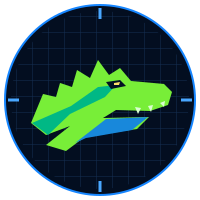

LEONIDA
Xbox Edition for PC
● browser demo onlineWINTER PREVIEW
PROJECT DOSSIER
EDITIONXbox → PC
PLATFORMWindows · planned
AVAILABLE NOWBrowser drive
LEONIDA is an independent GTA VI fan project preparing an Xbox-inspired edition for Windows. We believe players deserve a say in where and how they play, even when platform owners would choose for them.
Coastal drive
Take an original coupe down a palm-lined highway. The demo runs locally in your browser.
Steer with the arrow keys or buttons.
RELEASE TRANSMISSION
Soon.
Four weeks to the winter project preview. The native Windows build will follow its own release schedule.
22 DEC 2026 · 00:00 UTC